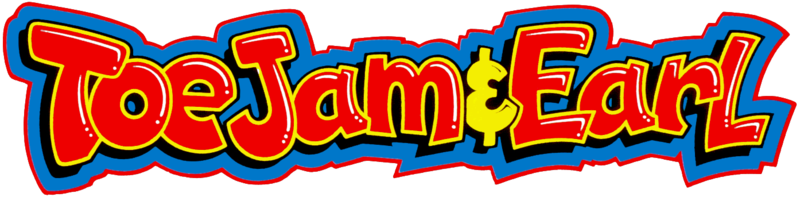

John Baker
John Baker is an American music composer and sound designer.
He studied music composition at Wesleyan University, and sometimes plays keyboard for a local jazz/funk band in San Francisco.
Sure, none of this sounds particularly amazing. But there is one very interesting thing about Mr. John Baker:
In 1991, he happened to write the greatest video game score of all time.

Unfortunately for John, with his debut soundtrack being the greatest of all time, his career was all downhill after 1991.
Here are the games on IMDB which list John Baker as a composer:
| Released | Title |
|---|---|
| 1991 | ToeJam & Earl |
| 1993 | ToeJam & Earl in Panic on Funkotron |
| 1994 | Slam City with Scotty Pippin |
| 1998 | Gex: Enter the Gecko |
| 1999 | Gex 3: Deep Cover Gecko |
| 2000 | Warriors of Might and Magic |
| 2002 | Citizen X |
| 2017 | Racing Legends at Ferrari Land |
| 2019 | ToeJam & Earl: Back in the Groove |
ToeJam and Earl Audio Samples
ToeJam Jammin'
Big Earl Bump
Rapmaster Rocket Racket
Alien Breakdown